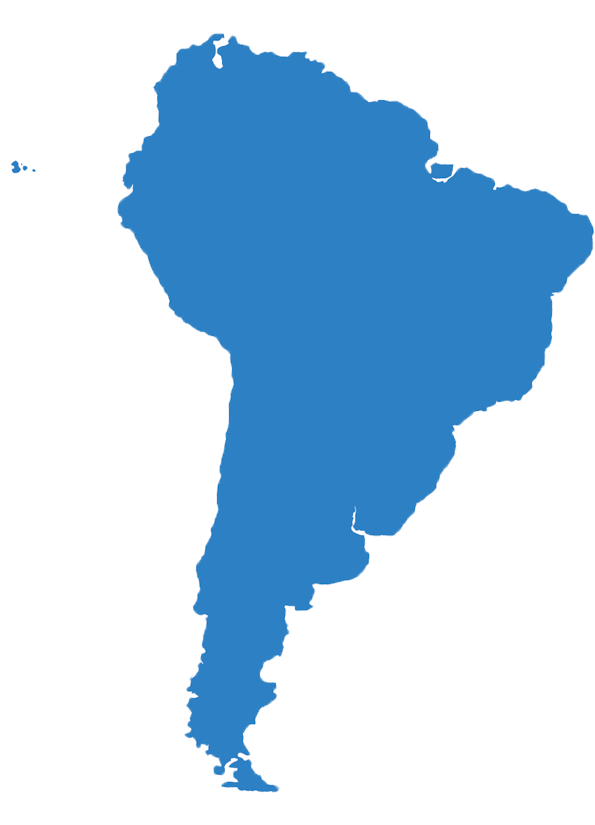

América do Sul
Países
São 13 os Países da América do Sul: Argentina, Bolívia, Brasil, Chile, Colômbia, Equador, Guiana, França (Guiana Francesa), Paraguai, Peru, Suriname, Uruguai e Venezuela.
Economia
A produção de alimentos básicos como as hortaliças, o milho ou o feijão é grande, mas voltada para o consumo interno. A criação de gado destinada à exportação de carne é importante na Argentina, no Paraguai, no Uruguai e na Colômbia. Nas regiões tropicais os cultivos mais importantes são o café, o cacau e as bananas, principalmente no Brasil, na Colômbia e no Equador.
Cultura
A cultura da América do Sul é pautada especialmente nas tradições. Além da cultura indígena, também a europeia, portuguesa e africana possuem destaque. Há uma ampla variedade de manifestações culturais sul-americanas, como as danças: tango na Argentina, samba no Brasil, salsa na Colômbia, dentre outras. Da mesma forma os gêneros musicais, os quais refletem em grande medida as vivências do povo, como no caso dos sertanejos. As manifestações religiosas também têm destaque, especialmente o catolicismo e o protestantismo.
Política
A instabilidade política também é uma característica Sul-Americana, com recorrência de golpes militares. Nos últimos 70 anos o continente teve ciclos de democracia logo após o final da 2ª Guerra Mundial; ciclo de golpes militares na década de 1960 com ditaduras militares que duraram até a década de 1980; uma retomada de governos democráticos em seguida; e entra no terceiro milênio com um fenômeno de governos de esquerda em diversos países.
Geografia
Em um panorama geral, a América do Sul possui uma grande cadeia de montanhas na costa oeste, planícies costeiras na costa leste, com alguns planaltos no centro e no norte. Possui uma imensa floresta equatorial, a maior e mais importante do mundo, conhecida como a Floresta Amazônica que passa pelo Brasil, Bolívia, Peru, Equador, Colômbia, República Guiana, Venezuela, Suriname e Guiana Francesa. A maritimidade e continentalidade representam a proximidade ou não de grandes massas de água, influenciando a umidade relativa do ar e amplitude térmica. Por fim, as correntes marítimas podem barrar ou facilitar a entrada de umidade no continente.
Curiosidades
- De acordo com o site Country Meters, a América do Sul é habitada por 437 milhões de pessoas distribuídas entre 13 países.
- Em 2013, o pais uruguaio foi o primeiro do mundo a legalizar totalmente o uso recreativo de cannabis em nível nacional.
- O continente possui grandes problemas socioeconômicos: mais de 11% da população é analfabeta.
- O Brasil é conhecido por ser o segundo país no mundo em consumo de pizzas: são produzidas diariamente cerca de 1,7 milhões de pizzas.